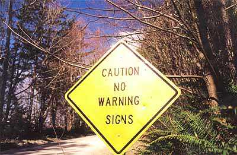

eanipulations
eanipulations

eanipulations
1. Cashtration (n.): The act of buying a house, which renders the subject financially impotent for an indefinite period of time.
2. Ignoranus: A person who's both stupid and an a-hole.
3. Intaxication: Euphoria at getting a tax refund, which lasts until you realize it was your money to start with.
4. Reintarnation: Coming back to life as a hillbilly.
5. Bozone (n.): The substance surrounding stupid people that stops bright ideas from penetrating. The bozone layer, unfortunately, shows little sign of breaking down in the near future.
6. Foreploy: Any misrepresentation about yourself for the purpose of getting laid.
7. Giraffiti: Vandalism spray-painted very, very high.
8. Sarchasm: The gulf between the author of sarcastic wit and the person who doesn't get it.
9. Inoculatte: To take coffee intravenously when you are running late.
10. Hipatitis: Terminal coolness.
11. Osteopornosis: A degenerate disease. (This one got extra credit.)
12. Karmageddon: It's when everybody is sending off all these really bad vibes, and then the Earth explodes, and it's a serious bummer.
13. Decafalon (n.): The grueling event of getting through the day consuming only things that are good for you
14. Glibido: All talk and no action.
15. Dopeler effect: The tendency of stupid ideas to seem smarter when they come at you rapidly.
16. Arachnoleptic fit (n.): The frantic dance performed just after you've accidentally walked through a spider web.
17. Beelzebug (n.): Satan in the form of a mosquito, that gets into your bedroom at three in the morning and cannot be cast out.
18. Caterpallor (n.): The color you turn after finding half a worm in the fruit you're eating.
 affynitions
affynitions
1. Coffee, n. The person upon whom one coughs.
2. Flabbergasted, adj. Appalled by discovering how much weight one has gained.
3. Abdicate, v. To give up all hope of ever having a flat stomach.
4. Esplanade, v. To attempt an explanation while drunk.
5. Willy-nilly, adj. Impotent.
6. Negligent, adj. Absentmindedly answering the door when wearing only a nightgown.
7. Lymph, v. To walk with a lisp.
8. Gargoyle, n. Olive-flavored mouthwash.
9. Flatulence, n. Emergency vehicle that picks up someone who has been run over by a steamroller.
10. Balderdash, n. A rapidly receding hairline.
11. Testicle, n. A humorous question on an exam.
12. Rectitude, n. The formal, dignified bearing adopted by proctologists.
13. Pokemon, n. A Rastafarian proctologist. (GOTTA LOVE IT!)
14. Oyster, n. A person who sprinkles his conversation with Yiddishisms.
15. Frisbeetarianism, n. The belief that, after death, the soul flies up onto the roof and gets stuck there.
16. Circumvent, n. An opening in the front of boxer shorts worn by Jewish men.
 umor for Lexophiles
umor for Lexophiles
I wondered why the baseball was getting bigger. Then it hit me.
Police were called to a day care where a 3-yr-old was resisting a rest.
Did you hear about the guy whose whole left side was cut off? He's all right now.
The roundest knight at King Arthur's round table was Sir Cumference.
To write with a broken pencil is pointless.
When fish are in schools, they sometimes take debate.
The short fortune teller who escaped from prison was a small medium at large.
A thief who stole a calendar got 12 months.
A thief fell & broke his leg in wet cement. He became a hardened criminal.
When the smog lifts in Los Angeles , U.C.L.A.
The dead batteries were given out free of charge.
A dentist & a manicurist fought tooth and nail.
A bicycle can't stand alone; it is two tired.
A will is a dead giveaway.
Time flies like an arrow; fruit flies like a banana.
A backward poet writes inverse.
In a democracy it's your vote that counts; in feudalism, it's your Count that votes.
A chicken crossing the road: poultry in motion.
If you don't pay your exorcist you can get repossessed.
Show me a piano falling down a mine shaft & I'll show you a flat miner.
The guy who fell onto an upholstery machine was fully recovered.
A grenade fell onto a kitchen floor in France , resulted in Linoleum Blownapart.
You are stuck with your debt if you can't budge it.
A calendar's days are numbered.
A lot of money is tainted: 'Taint yours, and 'taint mine.
A boiled egg is hard to beat.
He had a photographic memory which was never developed.
Those who get too big for their britches will be exposed in the end.
When you've seen one shopping center, you've seen a mall.
When she saw her first strands of gray hair, she thought she'd dye.
Bakers trade bread recipes on a knead to know basis.
Santa's helpers are subordinate clauses.
Acupuncture: a jab well done
 zoot91.(2006, June 15). Rutland Weekend Television - Gibberish. Eric Idle and Henry Woolf in a sketch from Idle's post-Python show, Rutland Weekend Television. This sketch shows a TV interview where they both talk in funny, nonsensical phrases.
zoot91.(2006, June 15). Rutland Weekend Television - Gibberish. Eric Idle and Henry Woolf in a sketch from Idle's post-Python show, Rutland Weekend Television. This sketch shows a TV interview where they both talk in funny, nonsensical phrases.
 he Yiddish Dictionary of Fools
he Yiddish Dictionary of Fools
Legend has it that Eskimos (Inuit) have hundreds of words to describe snow. We Jews have hundreds of words for "pains in the neck." Among the many majesties of Yiddish, is its magical ability to turn words into an emotional thesaurus. Both the "good" and the "bad" alike are not merely "said." No.. They're felt - in all their subtle nuance and multiple meanings. This is never more true then when we're talking about a "fool" or a "nudnek," a "shliemel," or a "schnook." Face it. We Jews don't bear fools lightly. Who had time? So is it surprising that we have more words in Yiddish for fools than there are Golden Arches? These words are so delicious, many have become part of American jargon. Do you have the story about these words, and what they truly mean? In case you don't, as a public service, friends from Jewlarious are proud to present the first: Yiddish-Yinglish Dictionary of Fools.
Bulvan: An ox, with no class. He'll move your house on his back - without asking.
Chaim Yankel: A mister nobody. His favorite color is beige.
Chaleria: A shrew. If her pastrami's fatty, she'll make a federal case.
Chazzer: A pig: He'll take home the cheap wine he brought you for Passover.
Draycup: She not only forgot her address, she's in the wrong city.
Eingeshparht: He's got a head like a rock.
Gantseh Makher: He made a few bucks selling whoopie cushions, so suddenly he's Trump. (Synonym: K'nocker)
Gonif: Unscrupulous, a thief. His partner's sent out an APB.
Grubber yung: Crude. A big mouth who has dirt (from grabbing) under his fingernails.
Klutz: Clumsy. She falls over her own sneakers- fastened with Velco.
Kvetch: A whiner. The food's salty, the place is chilly, eating out -who needs it?
Luftmensch: A dreamer - who never wakes up. He could paint a masterpiece, if only he had an easel - and knew how.
Meshugener: A loony. Whether he thinks his underwear is after him or barrels over Niagra Falls .
Moishe Kapoyr: Today he'd be called "oppositional." The family votes to hold the reunion in Vegas. He votes for Vilna.
Nar: He left his law practice to become a clown.
Nayfish: A doormat. When he's robbed, he apologizes for being short on cash.
Nebekh: A hapless unfortunate. He gets stepped on by accident a lot.
Nuchshlepper: A hanger-on. She shleps the 200 pound camping gear for the group.
Nudnik: A persistent bore. She doesn't stop with the talking, the asking, the annoying till you want to staple her lips together.
Nudzh: A pesty badgerer. She tells you twelve times to check the locks. Unlike the nudnik, it could be an occasional occurrence.
Ongeblussen: A self-involved blowhard. If his last name is Moses, he thinks the Bible gave him a mention.
Oysvorf: Unpopular outcast. Think David Duke at a Hadassah meeting.
Paskudnyak: A revolting, corrupt person. For him, there would be a very short funeral.
Shikker: A drunk. She has a little chaser with her Cheerios.
Shlemiel: A pathetic, clumsy loser. He drives over - through your living room.
Shlimazel: An unlucky loser. He's the one the shlemiel was visiting.
Shlump: Unkempt, saggy. She shleps, stooped, with her hair in strings.
Shmeggege: And idiotic doofus Short of a "meshuganah," he's sure he'll make a killing with his musical toilet seat ... and acts like a makher about it.
Shmendrik: Nincompoop. A fraternal twin to a shlemiel, he's thinner and weaker.
Shnook: A likeable patsy. You could sell him a time-share in Area 51, and he'll pay top dollar - for vacationing on an historical site.
Shnorror: A beggar. He's forever borrowing, taking advantage. Bad for a potluck party.
Trombenik: A lazy braggart. Not only does he blow his own horn, he doesn't own one.
Yuchna: A loud-mouthed, boorish female. In Loehmann's dressing room she'll yell "It would fit if you lost a few pounds!"
Yutz: Socially inept. He takes you to a restaurant with a clown face and spends the evening discussing his train collection.
Zshlub: Lazy slob. He shows up with schmutz on his untucked shirt. To Archie Bunker, "meathead" looked like a zshlub when he met him - although he'd never say it.
 DULT: A person who has stopped growing at both ends and is now growing in the middle.
DULT: A person who has stopped growing at both ends and is now growing in the middle.
BEAUTY PARLOR: A place where women curl up and dye.
CANNIBAL: Someone who is fed up with people.
CHICKENS: The only animals you eat before they are born and after they are dead.
COMMITTEE: A body that keeps minutes and wastes hours.
DUST: Mud with the juice squeezed out.
EGOTIST: Someone who is usually me-deep in conversation.
HANDKERCHIEF: Cold Storage.
INFLATION: Cutting money in half without damaging the paper.
MOSQUITO: An insect that makes you like flies better.
RAISIN: Grape with a sunburn.
SECRET: Something you tell to one person at a time.
SKELETON: A bunch of bones with the person scraped off.
TOOTHACHE: The pain that drives you to extraction.
TOMORROW: One of the greatest labor saving devices of today.
YAWN: An honest opinion openly expressed.
WRINKLES: Something other people have,similar to my character lines.
he Washington Post's Mensa Invitational once again asked readers to take any word from the dictionary, alter it by adding, subtracting or changing one letter, and supply a new definition. Here are this year's winners. Read them carefully. Each is an artificial word with only one letter altered from a real word. Some are terrifically innovative:
1. Intaxication: Euphoria at getting a tax refund, which lasts until you realize it was your money to start with.
2. Reintarnation: Coming back to life as a hillbilly.
3. Bozone (n.): The substance surrounding stupid people, that stops bright ideas from penetrating. The Bozone layer, unfortunately, shows little sign of breaking down in the near future.
4. Cashtration (n.): The act of buying a house, which renders the subject financially impotent for an indefinite period of time.
5. Giraffiti: Vandalism spray-painted very, very high.
6. Sarchasm: The gulf between the author of sarcastic wit and the person who doesn't get it.
7. Inoculatte: To take coffee intravenously when you are running late.
8. Hipatitis: Terminal coolness.
9. Osteopornosis: A degenerate disease.
10. Karmageddon: It's like, when everybody is sending off all these really bad vibes, right? And then like, the Earth explodes and it's like, a serious bummer.
11. Decafalon (n.): The grueling event of getting through the day consuming only things that are good for you.
12. Glibido: All talk and no action.
13. Dopeler Effect: The tendency of stupid ideas to seem smarter when they come at you rapidly.
14. Arachnoleptic Fit (n.): The frantic dance performed just after you've accidentally walked through a spider web
15. Beelzebug (n.): Satan in the form of a mosquito, that gets into your bedroom at three in the morning and cannot be cast out.
16. Caterpallor (n.): The color you turn after finding half a worm in the fruit you're eating.
17. Ignoranus: A person who's both stupid and an asshole.
 usiness cards
usiness cards
Anesthesiologist business card:
When you care enough to sleep with the very best.
**************************
Sign over a Gynecologist's Office:
'Dr. Jones, at your cervix.'
**************************
On a Septic Tank Truck:
Yesterday's Meals on Wheels
*************************
At a Proctologist's door:
'To expedite your visit please back in.'
**************************
On a Plumber's truck:
'We repair what your husband fixed.'
**************************
On another Plumber's truck:
'Don't sleep with a drip. Call your plumber.'
**************************
At a Tire Shop in Milwaukee :
'Invite us to your next blowout.'
**************************
At a Towing company:
'We don't charge an arm and a leg. We want tows.'
**************************
At a Propane Filling Station:
'Thank heaven for little grills.'
**************************
 ompendium of Pontifications
ompendium of Pontifications
1. I wondered why the baseball was getting bigger. Then it hit me.
2. Police were called to a daycare where a three-year-old was resisting a rest.
3. Did you hear about the guy whose whole left side was cut off? He's all right now.
4. The roundest knight at King Arthur's round table was Sir Cumference.
5. To write with a broken pencil is pointless.
6. When fish are in schools they sometimes take debate.
7. A thief who stole a calendar got twelve months.
8. A thief fell and broke his leg in wet concrete. He became a hardened criminal.
9. Thieves who steal corn from a garden could be charged with stalking.
10. We'll never run out of math teachers because they always multiply.
11. When the smog lifts in Los Angeles, U C L A.
12. The professor discovered that her theory of earthquakes was on shaky ground.
13. The dead batteries were given out free of charge.
14. If you take a laptop computer for a run you could jog your memory.
15. A dentist and a manicurist fought tooth and nail.
16. What's the definition of a will? It's a dead giveaway
good pun is its own re-word
Energizer Bunny arrested - charged with battery.
A pessimist's blood type is always b-negative.
Practice safe eating - always use condiments.
A Freudian slip is when you say one thing but mean your mother.
Shotgun wedding: A case of wife or death.
I used to work in a blanket factory, but it folded.
Marriage is the mourning after the knot before.
A hangover is the wrath of grapes.
Corduroy pillows are making headlines.
Is a book on voyeurism a peeping tome?
Sea captains don't like crew cuts.
Does the name Pavlov ring a bell?
A successful diet is the triumph of mind over platter.
Time flies like an arrow. Fruit flies like a banana.
A gossip is someone with a great sense of rumor.
Without geometry, life is pointless.
When you dream in color, it's a pigment of your imagination.
Reading while sunbathing makes you well-red.
A man's home is his castle, in a manor of speaking.
Dijon vu - the same mustard as before.
When two egotists meet, it's an I for an I.
A bicycle can't stand on its own because it is two-tired.
What's the definition of a will? (Come on, it's a dead giveaway!)
A backwards poet writes inverse.
In democracy your vote counts. In feudalism, your count votes.
A chicken crossing the road is poultry in motion.
If you don't pay your exorcist, you get repossessed.
With her marriage, she got a new name and a dress.
Show me a piano falling down a mine shaft, and I'll show you a flat minor.
When a clock is hungry, it goes back four seconds.
The man who fell into an upholstery machine is fully recovered.
A grenade thrown into a kitchen in France would result in Linoleum Blownapart.
You feel stuck with your debt if you can't budge it.
Local Area Network in Australia: The LAN down under.
He often broke into song because he couldn't find the key.
Every calendar's days are numbered.
A lot of money is tainted. It t'aint yours and it t'aint mine.
A boiled egg in the morning is hard to beat.
He had a photographic memory that was never developed.
The short fortune-teller who escaped from prison was a small medium at large.
Once you've seen one shopping center, you've seen a mall.
Those who jump off a Paris bridge are in Seine.
When an actress saw her first strands of gray hair, she thought she'd dye.
Bakers trade bread recipes on a knead-to-know basis.
Santa's helpers are subordinate clauses.
Acupuncture is a jab well done.
FileCabi.net.
The Weirdest Thing You Will EVER See. WARNING! This video contains obscene language. Someone has taken a children's program in Dutch and captioned it as if they were speaking English. The result is hilarious, but risque!
 ateral thinking
ateral thinking
These puzzles are words that are spatially arranged to make a pun. For example,
1.
man _____ boardwhich is, man overboard (man over board). Try the puzzles below. All answers are at the end of this piece. (Don't peek!)
2.
stand _____ i3. /r/e/a/d/i/n/g/
4.
r road a d5.
cycle cycle cycle6.
0 _________ M.D. Ph.D.7.
knee light8.
ground
_____________________________
feet feet feet feet feet feet
9. he's | himself
10. ecnalg
11. death ... life
12.
ANSWERS: 2. I understand; 3. reading between the lines; 4. crossroads; 5. tricycle; 6. two degrees below zero; 7. neon light; 8. six feet underground; 9. he's by himself; 10. a backward glance. 11. life after death; 12. think big; 13. long time no see (c).
AdamBuxton (2007, March 20). Songs of praise (with subtiltles). Translations of popular hymns for the hard of hearing, by the hard of hearing. WARNING! Risque and sacriligeous.
 ackie Mason's opposition to Spanish being spoken as a national language
ackie Mason's opposition to Spanish being spoken as a national language
There may be those among you who support including Spanish in our national language. I for one am 110% against this! We must preserve the exclusivity and, above all, the purity of the English language.To all the shlemiels, shlemazels, nebbishes, nudniks, klutzes, putzes, shlubs, shmoes, shmucks, nogoodniks, and momzers that are out there pushing Spanish, I just want to say that I, for one, believe that English and only English deserves linguistic prominence in our American culture. To tell the truth, it makes me so farklempt, I'm fit to plotz. This whole Spanish schmeer gets me broyges, specially when I hear these erstwhile mavens and luftmenschen kvetching about needing to learn Spanish. What chutzpah! These shmegeges can tout their shlock about the cultural and linguistic diversity of our country, but I, for one, am not buying their shtick. It's all so much dreck, as far as I'm concerned. I exhort you all to be menshen about this and stand up to their fardrayte arguments and meshugganah, farshtunkene assertions. It wouldn't be kosher to do anything else. Remember, when all is said and done, we have English and they've got bubkes! The whole myseh is a pain in my tuchas!
 ayings with a punch.
ayings with a punch.
1. A bicycle can't stand alone because it is two-tired.
2. What's the definition of a will? (It's a dead giveaway.)
3. Time flies like an arrow -- Fruit flies like a banana.
4. A backward poet writes inverse.
5. In a democracy, it's your vote that counts; In feudalism, it's your count that votes.
6. A chicken crossing the road is poultry in motion.
7. If you don't pay your exorcist you get repossessed.
8. With her marriage she got a new name and a dress.
9. Show me a piano falling down a mine shaft and I'll show you A-flat minor.
10. When a clock is hungry it goes back four seconds.
11. The man who fell into an upholstery machine is fully recovered.
12. A grenade thrown into a kitchen in France would result in Linoleum Blownapart.
13. You feel stuck with your debt if you can't budge it.
14. Local Area Network in Australia: the LAN down under.
15. He often broke into song because he couldn't find the key.
16. Every calendar's days are numbered.
17. A lot of money is tainted. 'Taint yours and 'taint mine.
18. A boiled egg in the morning is hard to beat.
19. He had a photographic memory that was never developed.
20. A plateau is a high form of flattery.
21. The short fortuneteller who escaped from prison was a small medium at large.
22. Those who get too big for their britches will be exposed in the end.
23. When you've seen one shopping center you've seen a mall.
24. Those who jump off a Paris bridge are in Seine.
25. When an actress saw her first strands of gray hair she thought she'd dye.
26. Bakers trade bread recipes on a knead to know basis.
27. Santa's helpers are subordinate clauses.
28. Acupuncture is a jab well done.
29. Marathon runners with bad footwear suffer the agony of defeat.
he great thing about human language is that it prevents us from sticking to the matter at hand - Lewis Thomas
Do not accustom yourself to use big words for little matters - Samuel Johnson
Speak properly, and in as few words as you can, but always plainly; for the end of speech is not ostentation, but to be understood - William Penn
No one has a finer command of language than the person who keeps his mouth shut - Sam Rayburn
Language is the source of misunderstanding - Antoine de Saint-Exupery
Man invented language to satisfy his deep need to complain - Lily Tomlin
What's another word for "thesaurus"? - Steven Wright
 unished
unished
1. Two antennas met on a roof, fell in love and got married. The ceremony wasn't much, but the reception was excellent.
2. A jumper cable walks into a bar. The bartender says, "I'll serve you, but don't start anything."
3. Two peanuts walk into a bar, and one was a salted.
4. A dyslexic man walks into a bra.
5. Two cannibals are eating a clown. One says to the other: "Does this taste funny to you?"
6. "Doc, I can't stop singing 'The Green, Green Grass of Home.'"
"That sounds like Tom Jones Syndrome."
"Is it common?"
"Well, 'It's Not Unusual.'"
7. An invisible man marries an invisible woman. The kids were nothing to look at either.
8. Deja Moo: The feeling that you've heard this bull before.
9. I went to buy some camouflage trousers the other day but I couldn't find any.
10. A man woke up in a hospital after a serious accident. He shouted, "Doctor, doctor, I can't feel my legs!" The doctor replied, "I know you can't - I've cut off your arms!"
11. What do you call a fish with no eyes? A fsh.
12. Two termites walk into a bar. One asks, "Is the bar tender here?"
BUT WAIT -- THERE'S MORE!! Subject: Here are the 10 first place winners in the International Pun Contest
1. A vulture boards an airplane, carrying two dead raccoons. The stewardess looks at him and says, "I'm sorry, sir, only one carrion allowed per passenger."
2. Two fish swim into a concrete wall. The one turns to the other and says "Dam!".
3. Two Eskimos sitting in a kayak were chilly, so they lit a fire in the craft. Unsurprisingly it sank, proving once again that you can't have your kayak and heat it too.
4. Two hydrogen atoms meet. One says "I've lost my electron," The other says, "Are you sure?" The first replies "Yes, I'm positive."
5. Did you hear about the Buddhist who refused Novocain during a root canal? His goal: transcend dental medication.
6. A group of chess enthusiasts checked into a hotel and were standing in the lobby discussing their recent tournament victories. After about an hour, the manager came out of the office and asked them to disperse. "But why," they asked, as they moved off. "Because", he said, "I can't stand chess-nuts boasting in an open foyer."
7. A woman has twins and gives them up for adoption. One of them goes to a family in Egypt and is named "Ahmal." The other goes to a family in Spain; they name him "Juan." Years later, Juan sends a picture of himself to his birth mother. Upon receiving the picture, she tells her husband that she wishes she also had a picture of Ahmal. Her husband responds, "They're twins! If you've seen Juan, you've seen Ahmal."
8. These friars were behind on their belfry payments, so they opened up a small florist shop to raise funds. Since everyone liked to buy flowers from the men of God, a rival florist across town thought the competition was unfair. He asked the good fathers to close down, but they would not. He went back and begged the friars to close. They ignored him. So, the rival florist hired Hugh MacTaggart, the roughest and most vicious thug in town to "persuade" them to close. Hugh beat up the friars and trashed their store, saying he'd be back if they didn't close up shop. Terrified, they did so, thereby proving that only Hugh can prevent florist friars.
9. Mahatma Gandhi, as you know, walked barefoot most of the time, which produced an impressive set of calluses on his feet. He also ate very little, which made him rather frail and with his odd diet, he suffered from bad breath. This made him. (Oh, man, this is so bad, it's good)... A super calloused fragile mystic hexed by halitosis.
10. And finally, there was the person who sent ten different puns to his friends, with the hope that at least one of the puns would make them laugh. No pun in ten did.
Michael, E.
Rebellious words. Tongue twisters, I suspect, are found in all languages. As a linguist I can't imagine that the phenomenon wouldn't occur in languages I don't know. (Dear reader, please correct me if you have proof to the contrary!) The way certain pairings of words get jammed on the tongue in one's effort to push them out of the mouth is independent of whether the accursed combination of syllables is on the long or short side, fortuitous but completely within the bounds of accepted grammar, or strung together intentionally for the desired effect, such as those sentences we are asked to say quickly three times in succession: "Ripe white wheat reapers reap ripe white wheat right."
 hat a lovely bunch of vocabularians (persons who make up new words) you are! Lasterday (refers to any day before today) we squinched (action required to fit something into a space that is slightly too small) a schmiglet (a small unit of measurement) of your awesomtastic (so wonderful the words just meld in your mouth) one-of-a-kind entries into this space in preparation for our Top Ten reveal. With so many chizzy (awesome, super, happening) creations to choose from, we admit to becoming a bit flusterpated (a state of being flustered that's so intense, one's actions and words become bound up) and fahoodled (confused, esp. when trying to think of too many things at once). We craughed (to cry and laugh simultaneously), we troddled (to wander around without knowing of doing so), and finally decided to use the schwack (a large amount) of multiple entries received as the basis for the Top Ten - this is, let's not forget, all about favoritism.
hat a lovely bunch of vocabularians (persons who make up new words) you are! Lasterday (refers to any day before today) we squinched (action required to fit something into a space that is slightly too small) a schmiglet (a small unit of measurement) of your awesomtastic (so wonderful the words just meld in your mouth) one-of-a-kind entries into this space in preparation for our Top Ten reveal. With so many chizzy (awesome, super, happening) creations to choose from, we admit to becoming a bit flusterpated (a state of being flustered that's so intense, one's actions and words become bound up) and fahoodled (confused, esp. when trying to think of too many things at once). We craughed (to cry and laugh simultaneously), we troddled (to wander around without knowing of doing so), and finally decided to use the schwack (a large amount) of multiple entries received as the basis for the Top Ten - this is, let's not forget, all about favoritism.
From the thousands of submissions we received, here, then, are the ten words (not in the dictionary) entered the most often:
Top ten favorite words (not in the dictionary)
1. ginormous (adj): bigger than gigantic and bigger than enormous
2. confuzzled (adj): confused and puzzled at the same time
3. woot (interj): an exclamation of joy or excitement
4. chillax (v): chill out/relax, hang out with friends
5. cognitive displaysia (n): the feeling you have before you even leave the house that you are going to forget something and not remember it until you're on the highway
6. gription (n): the purchase gained by friction: "My car needs new tires because the old ones have lost their gription."
7. phonecrastinate (v): to put off answering the phone until caller ID displays the incoming name and number
8. slickery (adj): having a surface that is wet and icy
9. snirt (n): snow that is dirty, often seen by the side of roads and parking lots that have been plowed
10. lingweenie (n): a person incapable of producing neologisms
Energizer Bunny arrested - charged with battery.
A pessimist's blood type is always b-negative.
Practice safe eating - always use condiments.
A Freudian slip is when you say one thing but mean your mother.
Shotgun wedding - A case of wife or death.
I used to work in a blanket factory, but it folded.
Marriage is the mourning after the knot before.
A hangover is the wrath of grapes.
Corduroy pillows are making headlines.
Is a book on voyeurism a peeping tome?
Dancing cheek-to-cheek is really a form of floor play.
Banning the bra was a big flop.
Sea captains don't like crew cuts.
Does the name Pavlov ring a bell?
A successful diet is the triumph of mind over platter.
Time flies like an arrow. Fruit flies like a banana.
A gossip is someone with a great sense of rumor.
Without geometry, life is pointless.
When you dream in color, it's a pigment of your imagination.
Condoms should be used on every conceivable occasion.
Reading while sunbathing makes you well-red.
A man's home is his castle, in a manor of speaking.
Dijon vu - the same mustard as before.
When two egotists meet, it's an I for an I.
A bicycle can't stand on its own because it is two-tired.
What's the definition of a will? (Come on, It's a dead giveaway!)
A backward poet writes inverse.
In democracy your vote counts. In feudalism your count votes.
A chicken crossing the road is poultry in motion.
If you don't pay your exorcist, you get repossessed.
With her marriage, she got a new name and a dress.
Show me a piano falling down a mine shaft, and I'll show you A Flat Minor.
When a clock is hungry, it goes back four seconds.
The man who fell into an upholstery machine is fully recovered.
A grenade thrown into a kitchen in France would result in Linoleum Blown apart.
You feel stuck with your debt if you can't budge it.
Local Area Network in Australia the LAN down under.
He often broke into song because he couldn't find the key.
Every calendar's days are numbered.
A lot of money is tainted. It taint yours and it taint mine.
A boiled egg in the morning is hard to beat.
He had a photographic memory that was never developed.
A plateau is a high form of flattery.
The short fortuneteller who escaped from prison was a small medium at large.
Once you've seen one shopping center, you've seen a mall.
Those who jump off a Paris bridge are in Seine.
When an actress saw her first strands of gray hair, she thought she'd dye.
Bakers trade bread recipes on a knead-to-know basis.
Santa's helpers are subordinate clauses.
Acupuncture is a jab well done.
Marathon runners with bad footwear suffer the agony of defeat.
The poor guy fell into a glass grinding machine and made a spectacle of himself.
 nterpreter's worst fear
nterpreter's worst fear
Jake, the Interpreter, had developed such terrible panic attacks commuting into work every day that he decided to talk with a psychiatrist.
"Doc, it's terrible," Jake said. "I've developed a horrible fear and have anxiety attacks every time I get in the car with these other four guys and commute to work. It's turned into a special fear of tunnels. Every day we go through the same long tunnel, and with the guys crowded in with me, it doesn't matter whether I'm driving or we're going in one of their cars. I panic. I begin to sweat. I even get dizzy. Am I going crazy, Doc?"
Immediately, the doctor smiled and announced that he knew what Jake's problem was.
"What is it, Doc?" Jake asked. "Am I losing my mind?"
"No, no, no, my boy," the doctor said. "You have something very common in these parts. You have what is known as carpool tunnel syndrome."
he following questions and answers were collected from SAT tests given in Springdale, Arkansas in 2000 to 16-year-old students!
Q: Name the four seasons.
A: Salt, pepper, mustard and vinegar.
Q: Explain one of the processes by which water can be made safe to drink.
A: Flirtation makes water safe to drink because it removes large pollutants
like grit, sand, dead sheep and canoeists.
Q: How is dew formed?
A: The sun shines down on the leaves and makes them perspire.
Q: What is a planet?
A: A body of earth surrounded by sky.
Q: What causes the tides in the oceans?
A: The tides are a fight between the Earth and the Moon. All water tends to flow towards the moon, because there is no water on the moon, and nature
abhors a vacuum. I forget where the sun joins in this fight.
Q: In a democratic society, how important are elections?
A: Very important. Sex can only happen when a male gets an election.
Q: What are steroids?
A: Things for keeping carpets still on the stairs.
Q: What happens to your body as you age?
A: When you get old, so do your bowels and you get intercontinental.
Q: What happens to a boy when he reaches puberty?
A: He says good-bye to his boyhood and looks forward to his adultery.
Q: Name a major disease associated with cigarettes.
A: Premature death. (sounds right to me)
Q: How can you delay milk turning sour?
A: Keep it in the cow.
Q: How are the main parts of the body categorized?
A: The body is consisted into three parts - the brainium, the borax and the
abdominal cavity. The branium contains the brain, the borax contains the
heart and lungs, and the abdominal cavity contains the five bowels, A,E,I,O
and U.
Q: What is the Fibula?
A: A small lie.
Q: What does "varicose" mean?
A: Nearby.
Q: What is the most common form of birth control?
A: Most people prevent contraception by wearing a condominium.
Q: Give the meaning of the term "Caesarean Section."
A: The caesarean section is a district in Rome.
Q: What is a seizure?
A: A Roman emperor.
Q: What is a terminal illness?
A: When you are sick at the airport
Q: Give an example of a fungus. What is a characteristic feature?
A: Mushrooms. They always grow in damp places and so they look like
umbrellas.
Q: What does the word "benign" mean?
A: Benign is what you will be after you be eight.
Q: What is a turbine?
A: Something an Arab wears on his head.
Q: What's a Hindu?
A: It lays eggs.
am in the process of learning DGS (German Sign Language), so I asked one of my clients who is native in DGS how to sign Wie geht's? ("How are you?" but literally "How goes it?") He started to smirk. He said that one of his pet peeves is that older Deaf Germans tend to sign "How walk?" because gehen also means "to walk". That was interesting, but I roared when he also told me how some Deaf Germans sign misverstehen (misunderstand). They sign MIST (crap) and VERSTEHEN (understand), which on the mouth looks like misverstehen, but literally means "[doesn't] understand crap". This by the way, is not the proper sign, which is the same as in ASL.
For those interested in the actual signs: (1) Both hands are Y's, palms facing the signer and little fingers crossed, separate = WIE, then the non-dominant hand is held as in the ASL sign TABLE and the dominant hand walks the index and middle fingers down the arm from wrist to elbow = GEHEN. (2) A "T" is held to the nose and descends in a zig-zag = MIST, then a "P" is held at the dominant side temple and moves left and right like the ASL sign CARELESS.
umor for the thinking person
1. Don't sweat the petty things and don't pet the sweaty things.
2. One tequila, two tequila, three tequila, floor.
3. Atheism is a non-prophet organization.
4. If man evolved from monkeys and apes, why do we still have
monkeys and apes?
5. The main reason Santa is so jolly is because he knows where all
the bad girls live.
6. I went to a bookstore and asked the salesperson, "Where's the
self-help section?" She said if she told me, it would defeat the purpose.
7. What if there were no hypothetical questions?
8. If a deaf person swears, does his mother wash his hands with soap?
9. If someone with multiple personalities threatens to kill himself,
is it considered a hostage situation?
10. Is there another word for synonym?
11. Where do forest rangers go to "get away from it all?"
12. What do you do when you see an endangered animal eating an
endangered plant?
13. If a parsley farmer is sued, can they garnish his wages?
14. Would a fly without wings be called a walk?
15. Why do they lock gas station bathrooms? Are they afraid someone
will clean them?
16. If a turtle doesn't have a shell, is he homeless or naked?
17. Can vegetarians eat animal crackers?
18. If the police arrest a mime, do they tell him he has the right
to remain silent?
19. Why do they put Braille on the drive-through bank machines?
20. How do they get deer to cross the road only at those yellow road signs?
21. What was the best thing before sliced bread?
22. One nice thing about egotists: they don't talk about other people.
23. Does the Little Mermaid wear an algebra?
24. Do infants enjoy infancy as much as adults enjoy adultery?
25. How is it possible to have a civil war? @#&%$!!!# ????
26. If one synchronized swimmer drowns, do the rest drown, too?
27. If you ate both pasta and antipasto, would you still be hungry?
28. If you try to fail, and succeed, which have you done?
29. Whose cruel idea was it for the word "Lisp" to have an "S" in it?
30. Why are hemorrhoids called "hemorrhoids" instead of "assteroids"?
31. Why is it called tourist season if we can't shoot at them?
32. Why is there an expiration date on sour cream?
33. If you spin an Asian man in a circle three times does he
become disoriented?
34. Can an atheist get insurance against acts of God?
inners of the "worst analogies ever written in a high school essay" contest
He spoke with the wisdom that can only come from experience, like a guy who went blind because he looked at a solar eclipse without one of those boxes with a pinhole in it and now goes around the country speaking at high schools about the dangers of looking at solar eclipses without one of those boxes with a pinhole in it. (Joseph Romm, Washington)
She caught your eye like one of those pointy hook latches that used to dangle from screen doors and would fly up whenever you banged the door open again. (Rich Murphy, Fairfax Station)
The little boat gently drifted across the pond exactly the way a bowling ball wouldn't. (Russell Beland, Springfield)
McBride fell 12 stories, hitting the pavement like a Hefty Bag filled with vegetable soup. (Paul Sabourin, Silver Spring)
From the attic came an unearthly howl. The whole scene had an eerie, surreal quality, like when you're on vacation in another city and "Jeopardy" comes on at 7 p.m. instead of 7:30. (Roy Ashley, Washington)
Her hair glistened in the rain like nose hair after a sneeze. (Chuck Smith, Woodbridge)
Her eyes were like two brown circles with big black dots in the center. (Russell Beland, Springfield)
Bob was as perplexed as a hacker who means to access T:flw.quid55328.com\aaakk/ch@ung but gets T:\flw.quidaaakk/ch@ung by mistake. (Ken Krattenmaker, Landover Hills)
Her vocabulary was as bad as, like, whatever. (Unknown)
He was as tall as a six-foot-three-inch tree. (Jack Bross, Chevy Chase)
The hailstones leaped from the pavement, just like maggots when you fry them in hot grease. (Gary F. Hevel, Silver Spring)
Her date was pleasant enough, but she knew that if her life was a movie this guy would be buried in the credits as something like "Second Tall Man." (Russel Beland, Springfield)
Long separated by cruel fate, the star-crossed lovers raced across the grassy field toward each other like two freight trains, one having left Cleveland at 6:36 p.m. traveling at 55 mph, the other from Topeka at 4:19 p.m. at a speed of 35 mph. (Jennifer Hart, Arlington)
The politician was gone but unnoticed, like the period after the Dr. on a Dr Pepper can. (Wayne Goode, Madison,m Ala.)
John and Mary never met. They were like two hummingbirds who had also never met. (Russell Beland, Springfield)
The thunder was ominous-sounding, much like the sound of a thin sheet of a metal being shaken backstage during the storm scene in a play. (Barbara Fetherolf, Alexandria)
His thoughts tumbled in his head, making and breaking alliances like underpants in a dryer without Cling Free. (Chuck Smith, Woodbridge)
The red brick wall was the color of a brick-red Crayola crayon. (Bill Feeny, Washington)
ow our ASL probably looks to native signers
The following are true examples of signs (placards, not sign language) in foreign countries, written in an English of sorts to inform (and inadvertently amuse) Anglophones.
 In a Bucharest hotel lobby: The lift is being fixed for the next day. During that time we regret that you will be unbearable.
In a Bucharest hotel lobby: The lift is being fixed for the next day. During that time we regret that you will be unbearable.
 In a Belgrade hotel elevator: To move the cabin, push button for wishing floor. If the cabin should enter more persons, each one should press a number of wishing floor. Driving is then going alphabetically by national order.
In a Belgrade hotel elevator: To move the cabin, push button for wishing floor. If the cabin should enter more persons, each one should press a number of wishing floor. Driving is then going alphabetically by national order.
 In a Yugoslavian hotel: The flattening of underwear with pleasure is the job of the chambermaid.
In a Yugoslavian hotel: The flattening of underwear with pleasure is the job of the chambermaid.
 In a Japanese hotel: You are invited to take advantage of the chambermaid.
In a Japanese hotel: You are invited to take advantage of the chambermaid.
 In the lobby of a Moscow hotel across from a Russian Orthodox monastery: You are welcome to visit the cemetery where famous Russian and Soviet composers, artists, and writers are buried daily except Thursday.
In the lobby of a Moscow hotel across from a Russian Orthodox monastery: You are welcome to visit the cemetery where famous Russian and Soviet composers, artists, and writers are buried daily except Thursday.
 In an Austrian hotel catering to skiers: Not to perambulate the corridors in the house of repose in the boots of ascension.
In an Austrian hotel catering to skiers: Not to perambulate the corridors in the house of repose in the boots of ascension.
 On the menu of a Swiss restaurant: Our wines leave you nothing to hope for.
On the menu of a Swiss restaurant: Our wines leave you nothing to hope for.
 In an East African newspaper: A new swimming pool is rapidly taking shape since the contractors have thrown in the bulk of their workers.
In an East African newspaper: A new swimming pool is rapidly taking shape since the contractors have thrown in the bulk of their workers.
 In an advertisement by a Hong Kong dentist: Teeth extracted by the latest Methodists.
In an advertisement by a Hong Kong dentist: Teeth extracted by the latest Methodists.
 A translated sentence from a Russian chess book: A lot of water has been passed under the bridge since this variation has been played.
A translated sentence from a Russian chess book: A lot of water has been passed under the bridge since this variation has been played.
 In a Czechoslavakian tourist agency: Take one of our horse-driven city tours -- we guarantee no miscarriages.
In a Czechoslavakian tourist agency: Take one of our horse-driven city tours -- we guarantee no miscarriages.
 Advertisement for donkey rides in Thailand : Would you like to ride on your own ass?
Advertisement for donkey rides in Thailand : Would you like to ride on your own ass?
 In the window of a Swedish furrier: Fur coats made for ladies from their own skin.
In the window of a Swedish furrier: Fur coats made for ladies from their own skin.
 Detour sign in Kyushi, Japan: Stop -- Drive Sideways.
Detour sign in Kyushi, Japan: Stop -- Drive Sideways.
 In a Bangkok temple: It is forbidden to enter a woman even a foreigner if dressed as a man.
In a Bangkok temple: It is forbidden to enter a woman even a foreigner if dressed as a man.
 In a Tokyo bar: Special cocktails for the ladies with nuts.
In a Tokyo bar: Special cocktails for the ladies with nuts.
 In a Copenhagen airline ticket office: We take your bags and send them in all directions.
In a Copenhagen airline ticket office: We take your bags and send them in all directions.
 On the door of a Moscow hotel room: If this is your first visit to the USSR, you are welcome to it.
On the door of a Moscow hotel room: If this is your first visit to the USSR, you are welcome to it.
 In a Norwegian cocktail lounge: Ladies are requested not to have children in the bar.
In a Norwegian cocktail lounge: Ladies are requested not to have children in the bar.
 At a Budapest zoo: Please do not feed the animals. If you have any suitable food, please give it to the guard on duty.
At a Budapest zoo: Please do not feed the animals. If you have any suitable food, please give it to the guard on duty.
 In the office of a Roman doctor: Specialist in women and other diseases.
In the office of a Roman doctor: Specialist in women and other diseases.
 In an Acapulco hotel: The manager has personally passed all the water served here.
In an Acapulco hotel: The manager has personally passed all the water served here.
 In a Tokyo shop: Our nylons cost more than common, but you'll find they are the best in the long run.
In a Tokyo shop: Our nylons cost more than common, but you'll find they are the best in the long run.
 From a Japanese information booklet about using a hotel air conditioner: Cooles and Heates -- If you want just condition of warm in your room, please control yourself.
From a Japanese information booklet about using a hotel air conditioner: Cooles and Heates -- If you want just condition of warm in your room, please control yourself.
 From a brochure of a car rental firm in Tokyo: When passenger of foot heave in sight, tootle the horn. Trumpet him melodiously at first, but if he still obstacles your passage then tootle him with vigor.
From a brochure of a car rental firm in Tokyo: When passenger of foot heave in sight, tootle the horn. Trumpet him melodiously at first, but if he still obstacles your passage then tootle him with vigor.
 Two signs from a Majorcan shop entrance:
Two signs from a Majorcan shop entrance:
Banished. ids' language (from actual homework and test papers)
ids' language (from actual homework and test papers)
The future of "I give" is "I take."
The parts of speech are lungs and air.
A virgin forest is a forest where the hand of man has never set foot.
A city purifies its water supply by filtering the water then forcing it through an aviator.
The people who followed the Lord were called the 12 opposums.
A scout obeys all to whom obedience is due and respects all duly constipated authorities.
One by-product of raising cattles is calves.
To prevent head colds, use an agonizer to spray into the nose until it drips into the throat.
The four seasons are salt, pepper, mustard, and vinegar.
The word trousers is an uncommon noun because it is singular at the top and plural at the bottom.
Syntax is all the money collected at the church from sinners.
Iron was discovered because someone smelt it.
Dribbleglass.com: The Pictures. Collected here are memorable images. Some are funny, some ironic--some just plain strange.
atch your tongue!
Once, while living in Southern California I had occasion to travel to Baja, California. While there I encountered a friend of my father's who asked me to translate some directions to him so he and his family could do some traveling farther south. He had stopped a Mexican police officer and asked him for directions to "puta del mundo". The police officer was rather "excited", particularly since he was also eyeing the family that was sitting in the car. I spoke to this friend and asked him exactly what he said, and he repeated "puta del mundo". At this time I advised this family friend that he was asking to see a prostitute. The man was truly mortified. I then told him that maybe he wanted to go to Punta del Mundo and explained to him that it was down the road a piece.
RoadTrip America - Funny [road] signs.
it the road, Jack!
As companies try to put positive spin on the ugly practice of layoffs, they're inventing a new lexicon. Some downsizing lingo:
| COMPANY | EUPHEMISM |
| AT&T | Force management program |
| Bank of America | Release of resources |
| Bell Labs | Involuntary separation from payroll |
| Clifford of Vermont | Career-change opportunity |
| Digital Equipment Corp | Involuntary severance |
| GM | Career-transition program |
| Harris Bank of Chicago | Rightsizing the bank |
| National Semiconductor | Reshaping |
| Newsweek | Reduction in force (RIF) |
| Pacific Bell | Elimination of employment security policy |
| Proctor & Gamble | Strengthening global effectiveness |
| Stanford University | Repositioning |
| Stouffers Foods Corp | Schedule adjustments |
| Tandem Computers | Reducting duplication or focused reduction |
| Wal-Mart | Normal payroll adjustment |
| ? | Injected into the job market |
hose cruel idea was it for the word "lisp" to have an "s" in it?
Light travels faster than sound. That's why some people appear bright until you hear them speak.
How come "abbreviation" is such a long word?
If it is zero degrees outside today, and it it supposed to be twice as cold tomorrow, how cold will it be?
Why are they called buildings when they're already finished? Shouldn't they be called "builts"?
Why are they called apartments, when they are all stuck together?
Why does sour cream have an expiration date? Does it turn sweet?
Who is General Failure, and why is he reading my disk?
The light went out, but where to?
Does the reverse side also have a reverse side?
If the universe is everything, and scientists say the universe is expanding, what is it expanding into?
If I got into a taxi and the driver started driving backwards, would the taxi driver end up owing me money?
If a tree falls in the forest and no one is around to see it, do the other trees make fun of it?
Why is a carrot more orange than an orange?
When two airplanes almost collide, why do they call it a near-miss?
Why are there 5 syllables in "monosyllabic"?
Why do they call it the Department of Interior when they are in charge of everything outside?
If vegetarians eat vegetables, what do humanitarians eat?
Why is it, when a door is open it is ajar, but when a jar is open it is not adore?
If "con" is the opposite of "pro", what is the opposite of "progress"?
Why do we wait until a pig is dead to "cure" it?
Why do we put suits in a garment bag and put garments in a suitcase?
Do Roman paramedics refer to "IV's" as "4's"?
What do little birdies see when they get knocked unconscious?
Is boneless chicken considered to be an invertebrate?
I went to a bookstore and asked the saleswoman, "Where's the self-help section?" She said that if she told me, it would defeat the purpose.
Sooner or later, doesn't everyone stop smoking?
Isn't the best way to save face to keep the lower part shut?
War doesn't determine who is right, just who is left.
owards a universal language
Having chosen English as the preferred language in the EEC, the European Parliament has commissioned a feasibility study in ways of improving efficiency in communications between governmental departments. European officials have often pointed out that English spelling is unnecessarily difficult - for example, cough, plough, rough, through and thorough. What is clearly needed is a phased program of changes to iron out these anomalies. The program would, of course, be administered by a committee staff at top level by participating nations.
In the first year, for example, the committee would suggest using 's' instead of the soft 'c'. Sertainly, sivil servants in all sities would resieve this news with joy. Then the hard 'c' could be replaced by 'k' sinse both letters are pronounsed alike. Not only would this klear up konfusion in the minds of klerikal workers, but typewriters kould be made with one less letter.
There would be growing enthusiasm when in the sekond year, it was announsed that the troublesome 'ph' would henseforth be written'f'. This would make words like'fotograf' twenty per sent shorter in print.
In the third year, publik akseptanse of the new spelling kan be expeketed to reash the stage where more komplikated shanges are possible. Governments would enkourage the removal of double letters which have always ben a deterent to akurate speling. We would al agre that the horible mes of silent e's in the languag is disgrasful. Therfor we kould drop thes and kontinu to read and writ as though nothing had hapend.
By this tim it would be four years sins the skem began and peopl would be reseptiv to steps sush as replasing 'th' by 'z'. Perhaps zen ze funktion of 'w' kould be taken on by 'v', vitsh is, after al, half a 'w'. Shortly after zis, ze unesesary 'o' kould be dropd from words kontaining 'ou'. Similar arguments vud of kors be aplid to ozer kombinations of leters.
Kontinuing zis proses yer after yer, ve vud eventuli hav a reli sensibl riten styl. After tventi yers zer vud be no mor trubls, difikultis and everivun vud find it ezi tu understand esh ozer. ZE DREMS OF ZE GUVERNMENT VUD FINALI HAV KUM TRU!
hirty six politically correct ways to say someone is stupid
A few clowns short of a circus.
A few fries short of a Happy Meal.
An experiment in Artificial Stupidity.
A few beers short of a six-pack.
Dumber than a box of hair.
A few peas short of a casserole.
Doesn't have all his cornflakes in one box.
The wheel's spinning, but the hamster's dead.
One Fruit Loop shy of a full bowl.
One taco short of a combination plate.
A few feathers short of a whole duck.
All foam, no beer.
The cheese slid off his cracker.
Body by Fisher, brains by Mattel.
Has an IQ of 2, but it takes 3 to grunt.
Warning: Objects in mirror are dumber than they appear.
Couldn't pour water out of a boot with instructions on the heel.
He feel out of the Stupid tree and hit every branch on the way down.
An intellect rivaled only by garden tools.
As smart as bait.
Chimney's clogged.
Doesn't have all his dogs on one leash.
Doesn't know much but leads the league in nostril hair.
Elevator doesn't go all the way to the top floor.
Forgot to pay his brain bill.
Her sewing machine's out of thread.
His antenna doesn't pick up all the channels.
His belt doesn't go through all the loops.
If he had another brain, it would be lonely.
Missing a few buttons on his remote control.
No grain in the silo.
Proof that evolutions CAN go in reverse.
Receiver is off the hook.
Several nuts short of a full pouch.
Skylight leaks a little.
Slinky's kinked.
Surfing in Nebraska.
Too much yardage between his goal posts.
In the pinball game of life, his flippers were a little further apart than most.
atch your tongue!
Once, while living in Southern California I had occasion to travel south to Baja, California. While there I encountered a friend of my father's who asked me to translate some directions to him so he and his family could do some traveling farther south. He had stopped a Mexican police officer and asked him for directions to "puta del mundo". The police officer was rather "excited", particularly since he was also eyeing the family that was sitting in the car. I spoke to this friend and asked him exactly what he said and he repeated, "puta del mundo". At this time I advised this family friend that he was asking to see a prostitute. The man was truly mortified. I then told him that maybe he wanted to go to Punta del Mudo and explained to him that it was down the road a piece.
he law of conservation of consonants
The quantity of consonants in the English language is constant. If omitted in one place, they turn up in another. When a Bostonian "pahks" his "cah", the lost R's migrate southwest, causing a Texan to "warsh" his car and invest in "erl wells".
Before an emergency joint session of Congress yesterday, President Clinton announced US plans to deploy over 75,000 vowels to the war-torn region of Bosnia. The deployment, the largest of its kind in American history, will provide the region with the critically needed letters A, E, I, O, and U, and is hoped to render countless Bosnian names more pronounceable.
"For six year, we have stood by while names like Ygrvslhv and Tzlynhr and Glrm have been horribly butchered by millions around the world," Clinton said. "Today, the United States must finally stand up and say 'Enough.' It is time the people in Bosnia finally had some vowels in their incomprehensible words. The US is proud to lead the crusade in this noble endeavor."
The deployment, dubbed "Operation Vowel Storm" by the State Department, is set for early next week, with the Adriatic port cities of Sjlbvdnz and Grzny slated to be the first recipients. Two C-130 transport planes, each carrying 500 24-count boxes of E's will fly from Andrews Air Force Base across the Atlantic and airdrop the letters over the cities.
Citizens of Grzny and Sjlbvdnz eagerly await the arrival of the vowels. "My God, I do not think we can last another day," Trszg Grzdnjkln, 44, said. "I have six children and none of them has a name that is understandable to me or anyone else. Mr. Clinton, please send my poor, wretched family just one E. Please."
Said Sjlbvdnz resident Grg Hmphrs, 67: "With just a few key letters, I could be George Humphries. This is my dream."
The airdrop represents the largest deployment of any letter to a foreign government since 1984. During the summer of that year, the US shipped 92,000 consonants to Ethiopia, providing cities like Ouaouoaua, Eaoiiuae, and Aao with vital life-giving supplies of L's, S's and T's. The consonant-relief effort failed, however, when vast quantities of the letters were intercepted by violent gun-toting warlords.
Seen (in Austin, TX!) on the back of a septic tank company truck: "We're No. 1 in the No. 2 business." On the side of the same truck; "A straight flush beats a full house". [Thanks to Lisa Kriger Anderson.]
On an Electrician's truck: "Let us remove your shorts."
Outside a Radiator Repair Shop: "Best place in town to take a leak."
In a Non-smoking are On Maternity Room door: "Push, Push, Push."
On a Front Door: "Everyone on the premises is a vegetarian except the
dog."
At an Optometrist's Office: "If you don't see what you're looking for,
you've come to the right place."
On a Scientist's door: "Gone Fission"
On a Taxidermist's window: "We really know our stuff."
In a Podiatrist's window: "Time wounds all heels."
On a Butcher's window: "Let me meat your needs."
On another Butcher's window: "Pleased to meat you."
At a Used Car Lot: "Second Hand cars in first crash condition."
On a fence: "Salesmen welcome. Dog food is expensive."
At a Car Dealership: "The best way to get back on your feet - miss a
car payment."
Outside a Muffler Shop: "No appointment necessary. We'll hear you
coming."
Outside a Hotel: "Help! We need inn-experienced people."
At an Auto Body Shop: "May we have the next dents?"
In a Dry Cleaner's Emporium: "Drop your pants here."
On a desk in a Reception Room: "We shoot every 3rd salesman, and the
2nd one just left."
In a Veterinarian's waiting room: "Be back in 5 minutes. Sit! Stay!"
On a Music Teacher's door: "Out Chopin."
At the Electric Company: "We would be delighted if you send in your
bill. However, if you don't, you will be."
In a Beauty Shop: "Dye now!"
On the side of a Garbage Truck: "We've got what it takes to take what
you've got." (Burglars please copy.)
On the door of a Computer Store: "Out for a quick byte."
In a Restaurant window: "Don't stand there and be hungry, come in and
get fed up."
Inside a Bowling Alley: "Please be quiet. We need to hear a pin drop."
In a Cafeteria: "Shoes are required to eat in the cafeteria. Socks can
eat any place they want."
On the door of a Music Library: "Bach in a minuet."
In the front yard of a Funeral Home: "Drive carefully, we'll wait."
In a Counselor's office: "Growing old is mandatory. Growing wise is
John Cage's famous composition _Silence_ was commissioned by the National
Theater of the Deaf and used for many years as their theme song.
After retiring from baseball in 1902, Dummy Hoy went to work for the Navy,
where he invented semaphore. After a particularly hard day on the job,
another driver on the freeway cut him off. Hoy responded with a gesture best
translated as _I find your driving to be inappropriate and offensive_. This
gesture is now the third most-used gesture in the US and Canada, behind
SHHHHHH and _I coulda had a V-8_ which were also coined by Hoy.
One of Alexander Graham Bell's least-known inventions was the remote control
for televisions. That's why to this day they have a little button marked
_Mute_.
To construct a Shakespearean insult, combine one word from each of the
three columns below, and preface it with "Thou":
NEWS BULLETIN:
Saying it will improve the education of children who have grown up immersed in computer lingo, the school board in San Jose, Calif., has officially
designated computer English, or "Geekonics", as a second language. The
historic vote on Geekonics -- a combination of the word "geek" and the word
"phonics" -- came just weeks after the Oakland school board recognized black
English, or Ebonics, as a distinct language. "This entirely reconfigures our
parameters," Milton "Floppy" Macintosh, chairman of Geekonics Unlimited, said
after the school board became the first in the nation to recognize Geekonics.
"No longer are we preformatted for failure," Macintosh said during a
celebration that saw many Geekonics backers come dangerously close to smiling.
"Today, we are rebooting, implementing a program to process the data we need to
interface with all units of humanity." Controversial and widely misunderstood,
the Geekonics movement was spawned in California's Silicon Valley, where many
children have grown up in households headed by computer technicians,
programmers, engineers and scientists who have lost ability to speak plain
English and have inadvertently passed on their high-tech vernacular to their
children.
HELPING THE TRANSITION
While schools will not teach the language, increased teacher awareness of
Geekonics, proponents say, will help children make the transition to standard
English. Those students, in turn, could possibly help their parents learn to
speak in a manner that would lead listeners to believe that they have actual
blood coursing through their veins. "Bit by bit, byte by byte, with the proper
system development, with nonpreemptive multitasking, I see no reason why we
can't download the data we need to modulate our oral output," Macintosh said.
The designation of Ebonics and Geekonics as languages reflects a growing
awareness of our nation's lingual diversity, experts say. Other groups pushing
for their own languages and/or vernaculars to be declared official viewed the
Geekonics vote as a step in the right direction. "This is just, like, OK, you
know, the most totally kewl thing, like, ever," said Jennifer Notat-Albright,
chairwoman of the Committee for the Advancement of Valleyonics, headquartered
in Southern California. "I mean, like, you know?" she added.
THEY'RE HAPPY IN DIXIE
"Yeee-hah," said Buford "Kudzu" Davis, president of the Dixionics Coalition.
"Y'all gotta know I'm as happy as a tick on a sleeping bloodhound about this.
We could be fartin' thru silk perty soon." Spokesmen for several subchapters
of Dixionics -- including Alabonics, Tennesonics and Louisionics -- also said
they approved of the decision. Bill Flack, public information officer for the
Blue Ribbon Task Force on Bureaucratonics said that his organization would not
comment on the San Jose vote until it convened a summit meeting, studied the
impact, assessed the feasibility, finalized a report and drafted a
comprehensive action plan, which, once it clears the appropriate subcommittees
and is voted on, will be made public to those who submit the proper
information-request forms. Proponents of Ebonics heartily endorsed the
designation of Geekonics as an official language. "I ain't got no problem wif
it," said Earl E. Byrd, president of the Ebonics Institute. "You ever try
talkin' wif wunna dem computer dudes? Don't matter if it be a white computer
dude or a black computer dude; it's like you be talkin' to a robot -- RAM, DOS,
undelete, MegaHertZ. Ain't nobody understands. But dey keep talkin 'anyway.
'Sup wif dat?" Those involved in the lingual diversity movement believe that
only by enacting many different English languages, in addition to all the
foreign ones practiced here, can we all end up happily speaking the same boring
one, becoming a nation that is both unified in its diversity, and diversified
in its unity.
Others say that makes no sense at all. In any language.
A day without paronomasia is a day without punshine.
I argue very well. Ask any of my remaining friends. I can win an
argument on any topic, against any opponent. People know this, and
steer clear of me at parties. Often, as a sign of their great
respect, they don't even invite me. You too can win arguments.
Simply follow these rules:
* Drink Liquor.
Suppose you're at a party and some hotshot intellectual is expounding
on the economy of Peru, a subject you know nothing about. If you're
drinking some health-fanatic drink like grapefruit juice, you'll hang
back, afraid to display your ignorance, while the hotshot enthralls
your date. But if you drink several large martinis, you'll discover
you have STRONG VIEWS about the Peruvian economy. You'll be a WEALTH of
information. You'll argue forcefully, offering searing insights
and possibly upsetting furniture. People will be impressed. Some may
leave the room.
* Make things up.
Suppose, in the Peruvian economy argument, you are trying to prove
Peruvians are underpaid, a position you base solely on the fact that
YOU are underpaid, and you're damned if you're going to let a bunch of
Peruvians be better off. DON'T say: "I think Peruvians are
underpaid." Say: "The average Peruvian's salary in 1981 dollars
adjusted for the revised tax base is $1,452.81 per annum, which is
$836.07 before the mean gross poverty level."
NOTE: Always make up exact figures.
If an opponent asks you where you got your information, make THAT up,
too. Say: "This information comes from Dr. Hovel T. Moon's study for
the Buford Commission published May 9, 1982. Didn't you read it?"
Say this in the same tone of voice you would use to say "You left your
soiled underwear in my bath house."
* Use meaningless but weighty-sounding words and phrases.
Memorize this list:
Let me put it this way
You should also memorize some Latin abbreviations such as "Q.E.D.,"
"e.g.," and "i.e." These are all short for "I speak Latin, and you do
not."
Here's how to use these words and phrases. Suppose you want to say:
"Peruvians would like to order appetizers more often, but they don't
have enough money."
You never win arguments talking like that. But you WILL win if you
say: "Let me put it this way. In terms of appetizers vis-a-vis
Peruvians qua Peruvians, they would like to order them more often, so
to speak, but they do not have enough money per se, as it were.
Q.E.D."
Only a fool would challenge that statement.
* Use snappy and irrelevant comebacks.
This last one is especially valuable. Nobody, other than
mathematicians, has the vaguest idea what "parameters" means.
Here's how to use your comebacks:
You say As Abraham Lincoln said in 1873. . .
OR
You say Liberians, like most Asians. . .
* Compare your opponent to Adolf Hitler.
This is your heavy artillery, for when your opponent is obviously
right and you are spectacularly wrong. Bring Hitler up subtly. Say:
"That sounds suspiciously like something Adolf Hitler might say" or
"You certainly do remind me of Adolf Hitler."
So that's it: you now know how to out-argue anybody. Do not try to
pull any of this on people who generally carry weapons.
Parents put pictures of missing children on milk cartons. Why
don't women put pictures of missing husbands on beer cans?
Why do students of the Bible study it a whole lot more as they
get older? They are cramming for their finals.
If it's all right for infants to enjoy infancy, why shouldn't
adults enjoy adultery?
If all the world is a stage and all the people actors, where is
the audience?
If you try to fail and you succeed, which have you done?
Don't sweat the petty things and don't pet the sweaty things.
English has classifiers too, although we don't use them too often. I recently walked into the interpreting office at the King County Courthouse (Seattle, Washington) and saw a wonderful poster that had a block print of a rhinoceros and the following string of classifiers:
A crash of rhinos. A school of fish. A litter of pups. A flock of sheep. A string of ponies. A covey of partridges. A pride of lions. A herd of elephants. A plague of locusts. A colony of ants. A covey of quail. A kindle of kittens. A leap of leopards. A pod of seals. A sloth of bears. A rafter of turkeys. A pace of asses. A walk of snipe. A gam (or pod) of whales. A nest of rabbits. A gang of elk. A fall of woodchucks. A dule of doves. A skulk of foxes. A dissimulation of birds. A spring of teal. A peep of chickens. A bevy of roebucks. A business of ferrets. A bale of turtles. A pitying of turtledoves. A drift of hogs. A paddling of ducks. A siege of herons. A trip of goats. A charm of finches. A cete of badgers. A deceit of lapwings. A shoal of bass. An exaltation of larks. A drove of cattle. A singular of boars. A tiding of magpies. A gaggle of geese. A congregation of plovers. A husk of hares. An unkindness (or murder) of ravens. A labor of moles. A richness of martens. A cast of hawks. A knot of toads. A descent of woodpeckers. A sounder of swines. A mustering of storks. A clutch of eggs. A bouquet of pheasants. An army of caterpillars. A hover of trout. A flight of swallows. A troop (or mob) of kangaroos. A clowder of cats. A watch of nightingales. A barren of mules. A shrewdness of apes. A rag of colts. A murmuration of starlings. A building of rooks. A smack of jellyfish. A harras of horses. A parliament of owls. A route of wolves. A host of sparrows. An ostentation of peacocks. A blessing��� of unicorns. A flink of cows. An army of frogs. A mess of officers. [For more, see Birds in numbers, Collective nouns, and Animals: Some collective nouns.]
I wish to add to the list my own invented classifier: a snuggle of interpreters. I invented this because of the way some interpreters will put an arm around the other interpreter they are working with during interpretation from ASL to English.
Cynthia Johnston adds: I refer to a group of interpreters as an ingot of interpreters. A good deal of our work is in facilitating the training of Deaf individuals to become employable. Therefore, our work allows for the creation of taxpayers in higher tax brackets. We are all worth our weight in gold.
(Response to the above) "A snuggle of interpreters"-- an inspired choice, since an anagram of "sign language" is "snuggle again."
When you write copy you have the right to copyright the copy you write,
if the copy is right. If however, your copy falls over, you must right
your copy. If you write religious services you write rite, and have the
right to copyright the rite you write.
Very conservative people write right copy, and have the right to
copyright the right copy they write. A right wing cleric would write
right rite, and has the right to copyright the right rite he has the
right to write. His editor has the job of making the right rite copy
right before the copyright can be right.
Should Jim Wright decide to write right rite, then Wright would write
right rite, which Wright has the right to copyright.
Duplicating that rite would copy Wright right rite, and violate
copyright, which Wright would have the right to right.
Right?
The men wrote: "Woman, without her man, is nothing."
1. Verbs HAS to agree with their subjects.
2. Prepositions are not words to end sentences with.
3. And don't start a sentence with a conjunction.
4. It is wrong to ever split an infinitive.
5. Avoid clichés like the plague. (They're old hat)
6. Also, always avoid annoying alliteration.
7. Be more or less specific.
8. Parenthetical remarks (however relevant) are (usually)
unnecessary.
9. Also too, never, ever use repetitive redundancies.
10. No sentence fragments.
11. Contractions aren't necessary and shouldn't be used.
12. Foreign words and phrases are not apropos.
13. Do not be redundant; do not use more words than necessary; it's
highly superfluous.
14. One should NEVER generalize.
15. Comparisons are as bad as clichés.
16. Don't use no double negatives.
17. Eschew ampersands & abbreviations, etc.
18. One-word sentences? Eliminate.
19. Analogies in writing are like feathers on a snake.
20. The passive voice is to be ignored.
21. Eliminate commas, that are, not necessary. Parenthetical words
however should be enclosed in commas.
22. Never use a big word when a diminutive one would suffice.
23. Kill all exclamation points!!!
24. Use words correctly, irregardless of how others use them.
25. Understatement is always the absolute best way to put forth earth
shaking ideas.
26. Use the apostrophe in it's proper place and omit it when its not
needed.
27. Eliminate quotations. As Ralph Waldo Emerson said, "I hate
quotations. Tell me what you know."
28. If you've heard it once, you've heard it a thousand times: Resist
hyperbole; not one writer in a million can use it correctly.
29. Puns are for children, not groan readers.
30. Go around the barn at high noon to avoid colloquialisms.
31. Even IF a mixed metaphor sings, it should be derailed.
32. Who needs rhetorical questions?
33. Exaggeration is a billion times worse than understatement.
ord of the day.
ctual business signs.
A: "If we see you smoking we will assume you are on fire and take appropriate action."
he following definitions are from the Washington Post Style Invitational (a weekly contest for readers). The idea of this one is simply to redefine words from the dictionary - no added or changed letters.
he Washington Post's "Style Invitational" asked readers to take any
word from the dictionary, alter it by adding, subtracting, or changing
one letter, and supply a new definition.
SL Myths
DULThe handy Shakespearean insult kit
Column 1 Column 2
Column 3
artless
base-court
apple-john
bawdy
bat-fowling
baggage
beslubbering
beef-witted
barnacle
bootless
beetle-headed bladder
churlish
boil-brained
boar-pig
cockered
clapper-clawed bugbear
clouted
clay-brained
bum-bailey
craven
common-kissing
canker-blossom
currish
crook-pated
clack-dish
dankish
dismal-dreaming
clotpole
dissembling
dizzy-eyed
coxcomb
droning
doghearted
codpiece
errant
dread-bolted
death-token
fawning
earth-vexing
dewberry
fobbing
elf-skinned
flap-dragon
froward
fat-kidneyed
flax-wench
frothy
fen-sucked
flirt-gill
gleeking
flap-mouthed
foot-licker
goatish
fly-bitten
fustilarian
gorbellied
folly-fallen
giglet
impertinent
fool-born
gudgeon
infectious
full-gorged
haggard
jarring
guts-griping
harpy
loggerheaded
half-faced
hedge-pig
lumpish
hasty-witted
horn-beast
mammering
hedge-born
hugger-mugger
mangled
hell-hated
joithead
mewling
idle-headed
lewdster
paunchy
ill-breeding
lout
pribbling
ill-nurtured
maggot-pie
puking
knotty-pated
malt-worm
puny
milk-livered
mammet
qualling
motley-minded
measle
rank
onion-eyed
minnow
reeky
plume-plucked
miscreant
roguish
pottle-deep
moldwarp
ruttish
pox-marked
mumble-news
saucy
reeling-ripe
nut-hook
spleeny
rough-hewn
pigeon-egg
spongy
rude-growing
pignut
surly
rump-fed
puttock
tottering
shard-borne
pumpion
unmuzzled
sheep-biting
ratsbane
vain
spur-galled
scut
venomed
swag-bellied
skainsmate
villainous
tardy-gaited
strumpet
warped
tickle-brained
varlet
wayward
toad-spotted
vassal
weedy
unchin-snouted
whey-face
yeasty
weather-bitten
wagtail
 eekonics
ar.ono.ma.sia \.par-*-no--'ma--zh(e--)*, p*-.r
eekonics
ar.ono.ma.sia \.par-*-no--'ma--zh(e--)*, p*-.r
A:n-*-'ma--\ \-'mas-tik\ n
[L, fr. Gk, fr. paronomazein to call with a slight change of name, fr.
Xpara- + onoma name - more at NAME : a play on words : PUN -
par.ono.mas.tic aj
ow to win arguments, as it were
In terms of
Vis-a-vis
Per se
As it were
Qua
So to speak
You're being defensive.
Don't compare apples and oranges.
What are your parameters?
Your opponents says Lincoln died in 1865.
You say You're begging the question.
Your opponents says Liberia is in Africa.
You say You're being defensive.
f a bus station is where a bus stops and a train station is where a train stops, then what about this thing in front of me called a work station?
niglets or Words that should be in the dictionary but aren't.
opyright explained
n English professor wrote the words, "Woman without her man is nothing" on the blackboard and directed his students to punctuate it correctly.
The women wrote: "Woman! Without her, man is nothing."
 ules for better writing. . . not!
The dialectizer. The dialectizer takes text or other web pages and instantly creates parodies of them! Try it out by selecting a dialect, then entering a URL or English text below.
Swedish Chef's "Encheferizer". The ultimate in machine translation, brought to you by that gibberish-speaking Muppet. Converts plain ASCII to mock Swedish.
ules for better writing. . . not!
The dialectizer. The dialectizer takes text or other web pages and instantly creates parodies of them! Try it out by selecting a dialect, then entering a URL or English text below.
Swedish Chef's "Encheferizer". The ultimate in machine translation, brought to you by that gibberish-speaking Muppet. Converts plain ASCII to mock Swedish.
Return to the table of contents for "Humor and stories for interpreters".